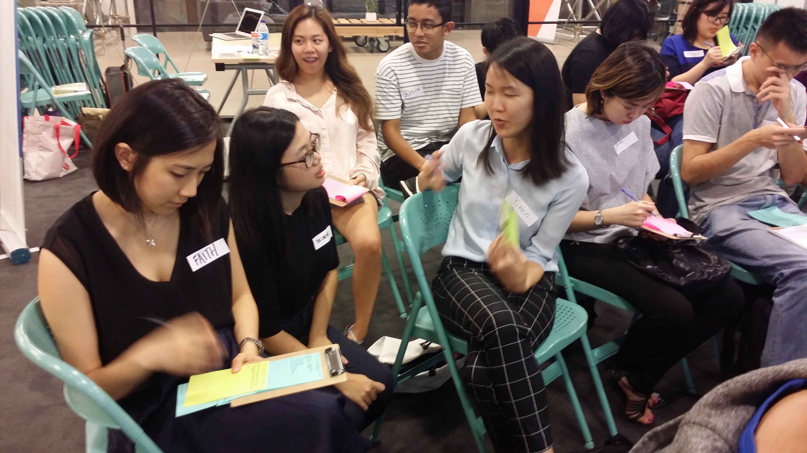
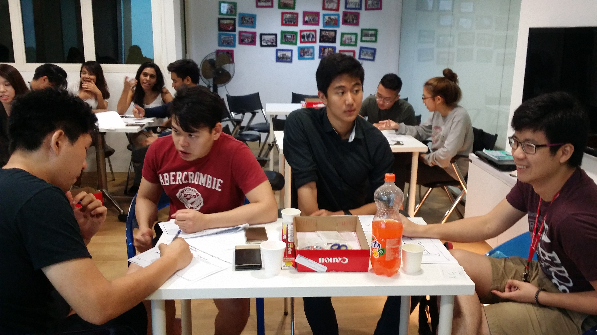

Simple Pros and Cons about GrabPay
Aug, 2017
Grab is launching Peer-to-peer fund transfer in GrabPay mobile wallet. Imagine now, as consumers, we take a Grab ride (with generous promo applied) to the usual dinner place with friends. After dinner, we whip out our Grab app again to settle the bills among each other. In no time, Grab is going be the no. 1 app we use every single day.

Sounds too good to be true? Perhaps we could do a simple assessment of the pros and cons of the new P2P transfer feature.
PROS
Business Opportunities: Grab already has some merchants onboard in their rewards section, and it is only sooner or later that there will be more reasons for consumers to spend. Perhaps there would be shops or other utilities (think Alipay and Go-Jek). It works in a push and pull model; with more reasons to spend, consumers are more willing to top up money into their wallet. With more money in consumers' wallet and transactions count/volume, merchants have more incentives to partner with Grab.
Desirability: An app for everything? Users would love it. If foreigners visit Singapore, we might just say: "Remember to download Grab, you'll need it for everything here!". Grab to Singaporeans would be like WeChat to the Chinese.
CONS
High Cost Structure: Notice that we are using credit cards to top up our GrabPay wallet? It gives the users a great ton of convenience and speed, however, Grab is bearing the cost of every credit card transaction right now. Remember Kashmi, the P2P mobile payments for friends? They seemed pretty exciting in the beginning, giving out free ice creams in university campuses (thanks!). But later in the game, they started to charge users for credit card transaction fees. Not cool. It's wonderful that Grab has so much funding to bear the cost, but the question is, how long can this sustain?
No Withdrawal: Frustrating. GrabPay is like an Ez-link card now. Before you top up, you have to think twice about whether you are really going to spend that amount. Somehow, there will ALWAYS be remaining left. Implementing withdrawal comes with some difficult choices; does it work as a refund to the users' credit card, or a transfer to the users' bank account? There are going to be different costs and technological challenges involved in each option.
As seen on my newsfeed:
O2O Payment Concept - GrabPay
Sep, 2017
With the new launch of GrabPay P2P Fund Transfer, there has been many speculations about the future development of Grabpay. Grab aims to work with 1,000 merchants in the retail, entertainment and food and beverage industries to accept mobile payments through GrabPay in the fourth quarter of this year(Straits Times, 2017).
Here is some exploration of how buyers/businesses will interact with Grabpay.
User Research Workshop: Quick & Dirty at NUS Enterprise
March, 2017
Every week, NUS Hangar organizes workshops and talks for the entrepreneurial community to gain new skills and practical takeaways to help them move forward with their startup journey. It was our privilege to be able to share the processes and importance user research.
Conducting actual interviews with each other

Some of the content that we got the participants to practise during the workshop
Group collaboration to define the problem statements and affinity mapping.
At the end of the workshop, participants took home the knowledge and experience of going through the 4 Act Interview Guide. All the best to everyone!
Design Thinking Workshop at NUS Enterprise
March, 2017
In collaboration with Charmaine Chan from Visa Innovation Lab, we conducted a Design Thinking workshop with NUS Enterprise for the students and public.
Empathy Stage: User interviews
Defining Stage: Problem Statement
Brainstorming Stage: Sketch 5 Ideas in 5 Minutes!
Building Stage: Rapid Prototyping
Testing Stage: Presenting and Gathering Feedback
Success!